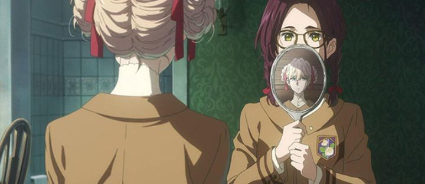

A brief disclaimer at the beginning: this is not "Violet Evergarden - The Movie." After the release of Netflix's "Violet Evergarden" anime series, it was announced that there would be a feature-length OVA of sorts, covering a stand-alone story. That's what this is: "Violet Evergarden - Eternity and the Auto Memory Doll." Curiously, the Japanese subtitles label this as "Violet Evergarden I," suggesting that this could be the first of a series. Concurrently, a proper theatrical movie meant as a sequel to the TV's story was also in development, to release in 2020.Funimation released "Eternity" on Bluray, as well as the rest of the franchise. Unlike the Bluray release of the TV series, the colors of this movie aren't washed out at all, giving the viewer a richer experience. The movie is even presented in a much wider aspect ratio (2.39:1 I think), not the standard 16:9 (the back of the box is inaccurate, an easy mistake since this rare in anime), further enhancing the theatrical quality of the film. ... otherwise, "Eternity" isn't a great step up from the TV series in terms of production quality or animation. Which isn't surprising, since the TV series was extravagent to begin with. But in some ways, I'd even say the animation is slightly worse, with less opportunity for exciting panoramic shots. And even though the story is stand-alone, it really is recommnded exclusively to existing fans of the "Evergarden" series, as the backgrounds of existing characters might be lost on you. Other things, like the music and English actors, will be very familiar to those fans as well (good, but not better).The original TV series focused mainly on Violet, a literal humanoid doll with robotic hands, learning to work as a letter-writer in a steampunk-variant of early 1900's-Europe. She had to learn about the subtlety's of human emotion, while also dealing with the likely death of her guardian ("Major") in the war. That story was emotional, but didn't really lead anywhere. Instead, "Evergarden's" strength seemed to be in the individual stories, the people that needed letters written. It worked best when "Violet" was a side character helping move someone else's story forward. As a "side-story," this is exactly what "Eternity" does for its 93-minute runtime, and it was a wise decision. What surprised me is that "Eternity" isn't really just one story, but three connected ones, each roughly 30 minutes long (and therefore with similar pacing to the original TV series). The first story has Violet travel to an all-girls' ettiquitte school, to help train one of the students, Isabella. Isabella is sickly, has messy hair, and a little rude, not appreciating her place in the world (being forced to "act like a lady" while her rich family decides who she will marry). Initially cold to Violet and her seemingly perfect mannerisms, Isabella grows to see her as a friend in those few weeks she was hired. They talk as friends, dance the male and female roles in dance class, take baths together, sleep in the same bed... wait a minute... Surely, it was intentional that Isabella's story comes across as a lesiban-erotic-fantasy, even if nothing too exciting happens. Some viewers will certainly be tickled by it, but it's a little out of place for "Evergarden" to indulge in. We do learn that Isabella used to live alone in the slums, and that she "adopted" a young girl named Taylor and took care of her before being discovered by her rich father. The second story in this movie takes place few years later, when Taylor is a little older (still perhaps only 7 or 8 years old): inspired by a letter she receives from Isabella and Violet, she runs away from her orphanage and travels alone to Violet's mail company. She insists on working there, and as young and adorable as she is, we watch a fun little adventure of Taylor learning the ropes of the mail business. The third story involves delivering a final letter between the two girls, when Isabella's address is unknown. I knew "Eternity" would be inconsequential to the series' story, but as cute and pleasant as it is, I somehow expected more. Fans will recognize some minor updates to series characters, like how one character retires and another seems poised to be married. But as a side-story... these types of stories in "Evergarden" seemed strongest when they involved adults, whether it was understanding unspoken emotions of others, or grieving a lost loved one. By comparison, Isaballa's character comes across as simply a brat with a coughing sickness that is never explained or resolved, and Taylor is practically a toddler without much depth to offer. And don't get me started on the bizarre poster art used for this film, of Isabella barefoot on a desk, tugging at Violet's hair-ribbon with her mouth, as if her arms didn't work and as if she never left her bedroom. Perhaps I'm a little too harsh. "Eternity and the Auto Memory Doll" does have a sweet conclusion in its final 10 minutes as a payoff, and the whole adventure is a fine little addition to "Violet Evergarden"'s book of stories, not much worse than the series was in terms of plot. The production values are strong enough to carry it, regardless of the story. The atmosphere and setting is still wonderful enough to sit with, rather than simply sit through.
- "Ani" More reviews can be found at : https://2danicritic.github.io/ Previous review: review_Violet_Evergarden Next review: review_Violet_Evergarden_-_The_Movie